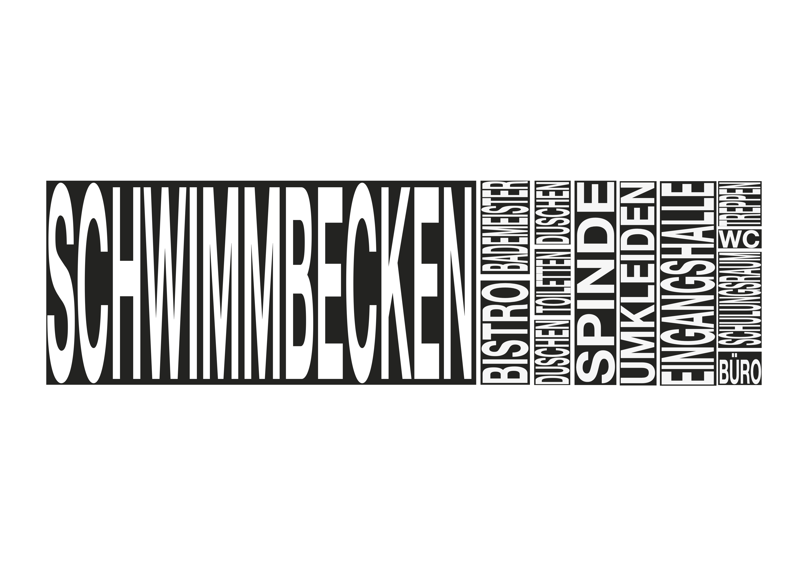

Schwimmbecken

The design is intended as a temporary structure that evolves in line with the site and its needs. A retractable tarpaulin provides additional shade and protection from the elements whilst the surrounding trees are not yet able to fulfil this function adequately. As the trees grow, the structure can be gradually scaled back over the next 10 to 20 years, and the number of modules reduced . In this way, the architecture is gradually adapted to the natural conditions, whilst the trees themselves provide increasing shade and shape the character of the site.
If the additional space is no longer required in the long term, the structure can be completely dismantled and reassembled at another location. This creates a flexible infrastructure that responds to the loss of a cultural venue without leaving behind a new permanent structure – a space for everyone, for as long as it is needed, and thereafter open to a new location and a new purpose.
A versatile space for exchange and culture With the removal of the Osthang, Darmstadt is losing an important venue for exchange, culture and collaborative experimentation. The design is intended as a response to this loss and creates, along Olbrichweg, an open, multifunctional space for the Mathildenhöhe. A lightweight, demountable steel structure can be flexibly extended along rails and adapted to the specific spatial requirements.
A compact functional unit containing toilets, a bar and an information area about the Mathildenhöhe forms the fixed core. The expandable space offers room for exhibitions, semester projects and final-year presentations by Darmstadt University of Applied Sciences, as well as for workshops and evening events. An extendable tarpaulin provides shade and shelter from the weather when required.
RELATED PROJECTS
6. Semester
RIEGERPLATZ
Details
RIEGERPLATZ
Details

5. Semester
TEEGARTEN
Details
TEEGARTEN
Details